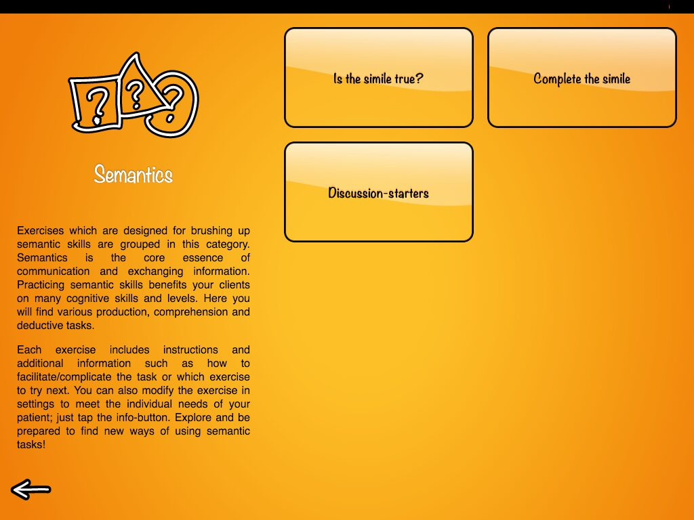

Blog
All The Things I Love About Speech Therapy With Adults
Blog available only in English.
NOW YOU CAN HAVE YOUR CAKE AND EAT IT TOO (or introducing SANAPSIS PRO, with three languages in one app for professional use)
Have you ever wanted to use Sanapsis in a different language than on the one you have on your iPad? Have you noticed how our new Sanapsis+ for patients asks you to choose a language when you first launch the app?

As wise as an owl? As dangerous as a plate? If you are a speech therapist and work with adults with acquired brain injury you are no stranger to difficulties in interpreting and processing figurative and more abstract language.